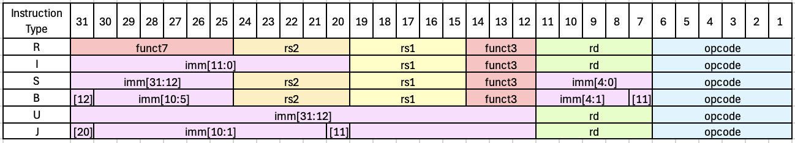
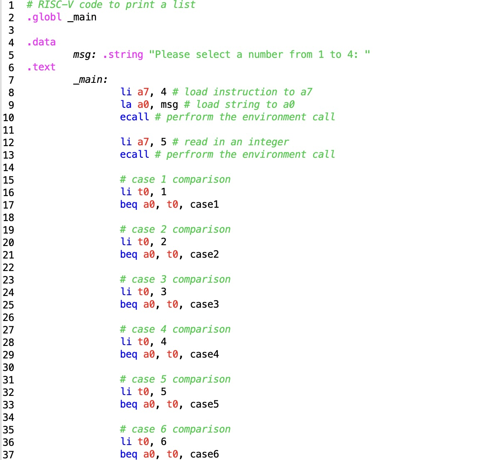
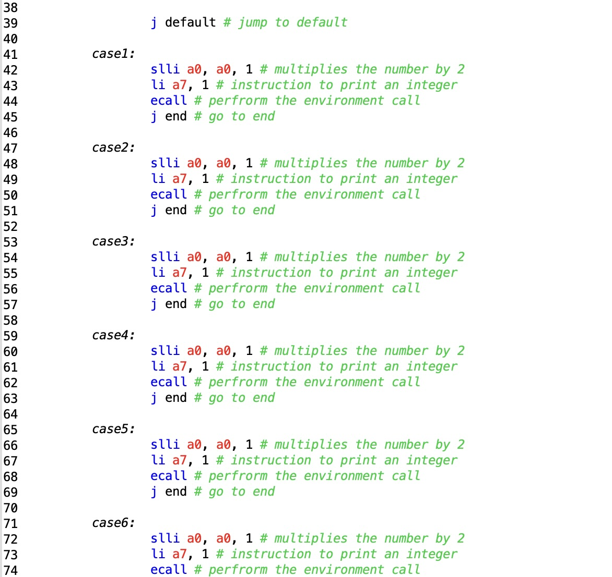
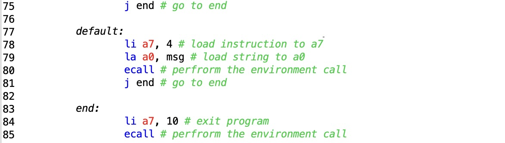

This is a webpage for discussing things that I found interesting about
assembly code.
Figure 1: free use video from pixabay.
Figure 2: free use image from pixabay.
Asssembly code is a lower level coding language that translates into machine code consisting only 1s and 0s. Moreover, assembly code is one level above machine code. Different assembly code is used for different devices. For example, x86 is used for Intel and ARM is used for macOS.

Figure 3: Figure made in Excel.
In RISC-V, there are R, I, S, B, U, and J type instructions. R type instructions are used for instructions like add, sub, or, and xor to change register values. I type instructions are used to add immediate values and to load instructions. S type instruyctions are used for store instructions. B type instructions are particularly interesting because you can use them to perform the function of a switch case, which I love using, because they can give the user a choice in the output. U type instructions involve 20 upper immediate bits (usinhg lui and auipc). J type instructions are used for unconditional jumps (using j, ja, or jal).
This is a RISC-V program that duplicates numbers from 1 to 6 with comments for clarity:



Figure 4: RISC-V program made and tested in rars1_6.jar.
Guide for Assembly Code | GitHub for Assembly Code